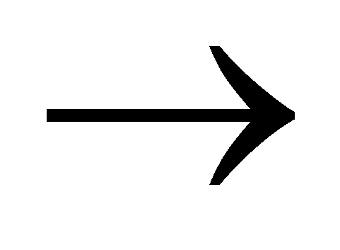
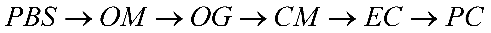

|
|
|
Once with the specification of the basic element (the first element of the chain) and by also knowing the maximum limit of the generating set (the planet’s peripheral media), we may conceive a structure of the organization levels of the bio-systems which exist on this planet. We shall use the same method that was used in the chapter 1 for displaying the organization levels of NAMS, in which the organization levels are colligated by means of the operator [] (structural implication operator):
 (X.11.3.1)
(X.11.3.1)
The relation X.11.3.1 represents the structural chain of the biosystems organization on Earth, in which the used acronyms have the following meaning:
PC - prokaryotic cells;
EC - eukaryotic cells;
CM - cellular media (cellular populations, G-type media for the spread bacteria media, S-type media for the compact tissue or bacteria compact media);
OR - organs (tissue media systems with specific functions such as the intestines, liver, pancreas, kidney, brain etc.);
FA - functional apparatus (systems made-up from organs, with specific functions such as the digestive, breathing, excretory, reproduction system etc.);
OG - organisms (an autonomous system consisting of functional devices);
OM - organismal media (populations of organisms, mostly G-type media);
PBS - planetary biosphere, global system made-up from the total amount of the organismal and cellular populations with a simultaneous existence in the peripheral media of a planet.
If we are taking into account that the organization levels OR and FA cannot have an independent existence, they are just parts (subsystems) of an OG system, the relation X.11.3.1 can be simplified and becomes:
 (X.11.3.2)
that is a relation which represents the structural chain of the organization of the autonomous bio-systems on Earth (the ones which meet all the criteria of the bio-system model).
Comment X.11.3.1: The reader has certainly noticed that unlike the relation 1.2.3 from chapter 1, the relation X.11.3.2 lacks of the question marks which trace the possible limits of the organization levels applicable for NAMS. It is natural because BMS have a lower limit of the decomposition level (there are elementary systems regardless of the cognition level), as it revealed by the issues presented in this annex. On the planet, there is also a maximum limit in terms of composability, which is dictated by the sizes of the peripheral media of the resident planet, media in which PBS is distributed. While as regards the lower limit of the BMS’ organization, the objectual philosophy clearly postulates that in case of the BMS with atomic abiotic support, PC biosystems are elementary systems, as regards the upper limit, it is likely to exist some systems made-up from different PBS, placed in the same PS (what the scientists are doing now by trying to colonize the Moon and Mars), or in different PS, under the assumption of a technological lap which would be sufficient for ensuring the biosystems fluxes on astronomical distances. The previous underlining has a specific purpose, that is to represent that a lower limit of the organization levels can be noticed in case of a certain environment of existence, made-up from NAMS with a specific organization level (in case of the notorious bio-systems, this is a LA medium - the water - as it was previously mentioned). As for another media generation, such as PFM, and similar with the way how NAMS were created, the possibility of occurring another biosystem generation which owns the PFM elements as its abiotic support shall not be let aside as well.
We may notice further on that the PC, EC and OG systems are all centralized (CS, all the cellular functions are controlled by a cellular or neuronal IPS which exists inside the nucleus), and CM, OGM and PBS systems are distributed systems (DS, in which there is no interactions except the ones deployed between the proximity elements. Thus, an interesting alternation of the system types occurs into the structural chain:
(X.11.3.3)
The reader must understand that this structural chain has no connection with the taxonomic classifications which are stated in the biology field, classifications which are focused more on the reigns, orders, species etc. It is clear that these categorizations are useful because they emphasize the common and different elements of the various biosystem classes, but these do not concern the organization levels.
Copyright © 2006-2011 Aurel Rusu. All rights reserved.